Introduction
Virat Kohli (born November 5, 1988) is an Indian international cricketer and the former captain of the Indian national team. Widely regarded as one of the greatest batsmen in the history of the sport, Kohli has redefined the standards of fitness and consistency in modern cricket. After leading India to a U-19 World Cup victory in 2008, Kohli quickly rose through the ranks to become the backbone of the Indian batting lineup. Known as the "Chase Master," he holds the world record for the most centuries in ODI cricket and was the pioneer behind India’s dominant "Pace Era" in Test cricket. In 2025, he further cemented his legacy by leading RCB to their maiden IPL title and helping India secure the Champions Trophy.
Career Overview
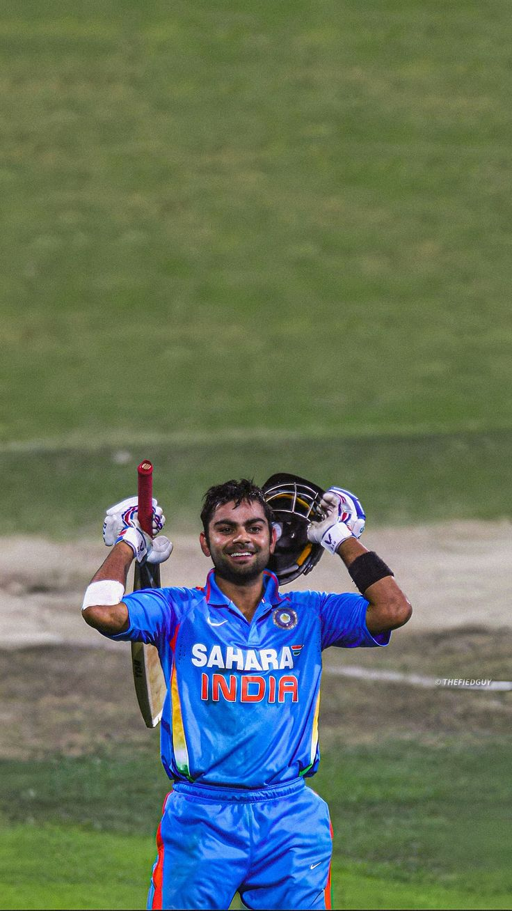
Virat Kohli’s journey began in the gullies of Delhi, where his early affinity for the game was nurtured at the West Delhi Cricket Academy under coach Rajkumar Sharma. A prolific scorer in domestic cricket, he first grabbed global headlines by leading the Indian Under-19 team to a historic World Cup victory in 2008. This triumph paved the way for his international debut against Sri Lanka in the same year. Despite early struggles, Kohli's relentless work ethic and legendary grit saw him evolve from a talented youngster into the backbone of India’s middle order, eventually becoming a crucial member of the 2011 ODI World Cup-winning squad.
Test Career
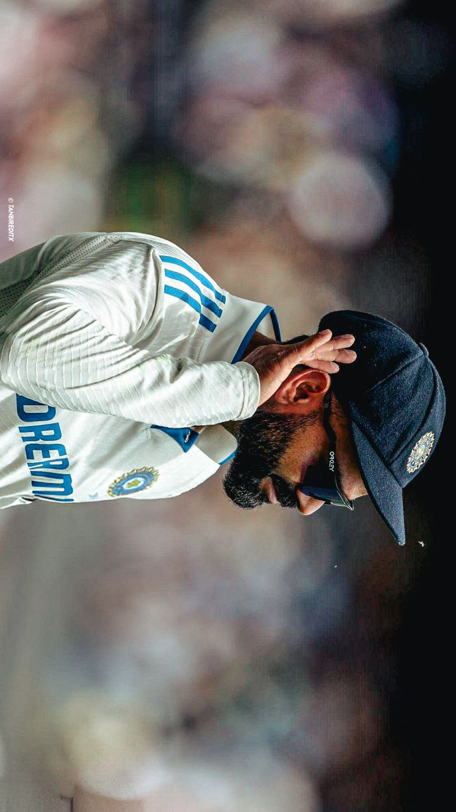
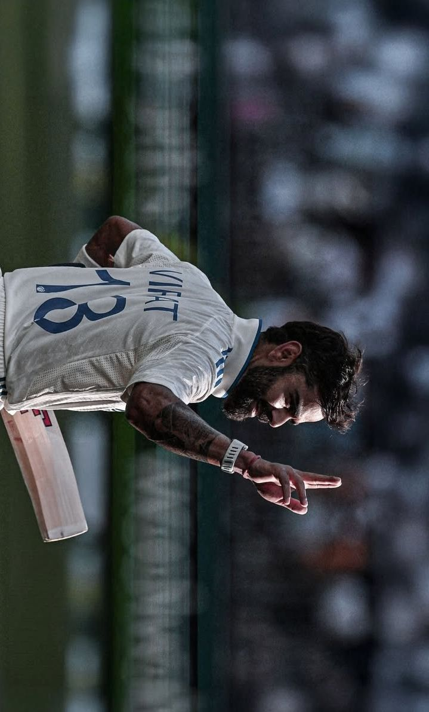
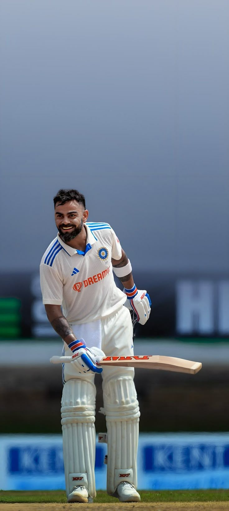
Virat Kohli’s journey in Test cricket, spanning from 2011 to his retirement in May 2025, is a saga of extreme discipline and technical evolution. Over 123 Test matches, Kohli amassed 9,230 runs with a solid average of 46.85. He finished his career as India's fourth-highest run-scorer in the format, trailing only legends like Tendulkar, Dravid, and Gavaskar. Kohli was particularly famous for his "Big Hundreds," holding the Indian record for the most double centuries (7), with his highest score being an unbeaten 254 against South Africa. From his maiden century at the Adelaide Oval in 2012 to his final emotional century against Australia in late 2024, Kohli proved that he could dominate in all conditions—scoring heavily in England, South Africa, and especially Australia, where he hit 7 centuries, the most by any Indian.
ODI Career
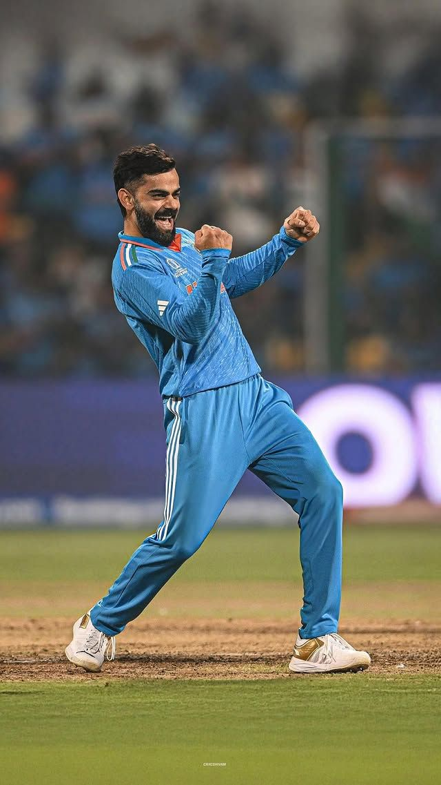
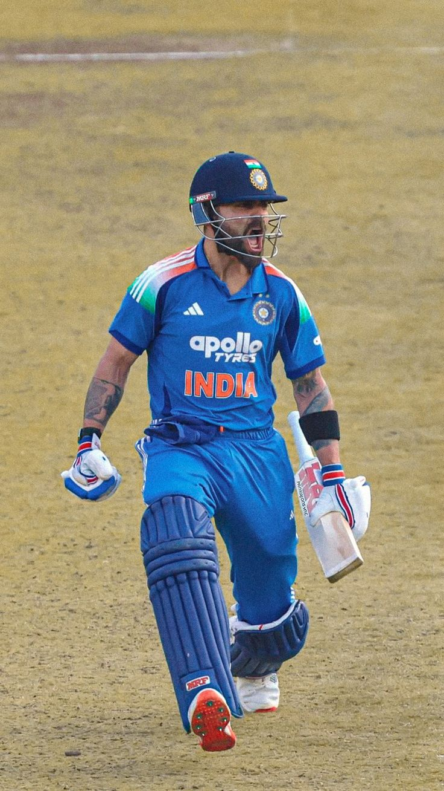
Virat Kohli’s journey in One Day Internationals is defined by a level of consistency rarely seen in the history of the sport. Making his debut in 2008, he quickly transitioned from a promising young talent to the world’s premier "Chase Master," renowned for his clinical ability to calculate and finish high-pressure run chases. As of early 2026, Kohli has amassed nearly 14,800 runs at an elite average of approximately 58.7, making him the second-highest run-scorer in ODI history behind only Sachin Tendulkar. His most iconic milestone remains his record-breaking 54th ODI century, achieved against New Zealand in January 2026, which solidified his status as the highest centurion in the format. A two-time global champion, having won the 2011 World Cup and the 2025 Champions Trophy, Kohli continues to be the pillar of India's top order, currently standing just a few hundred runs away from the historic 15,000-run mark.
IPL Career
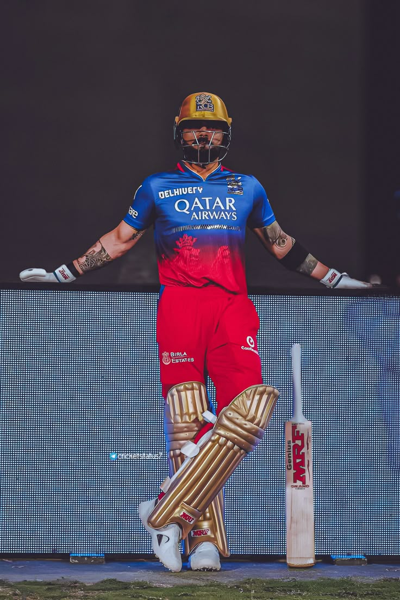
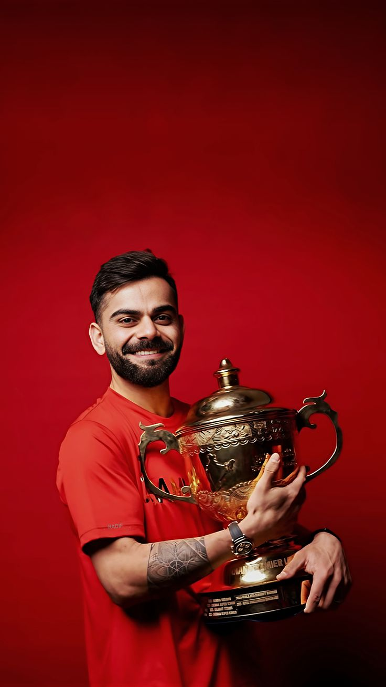
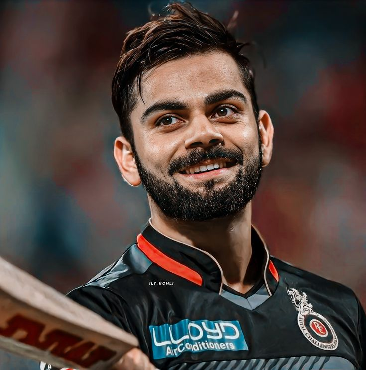
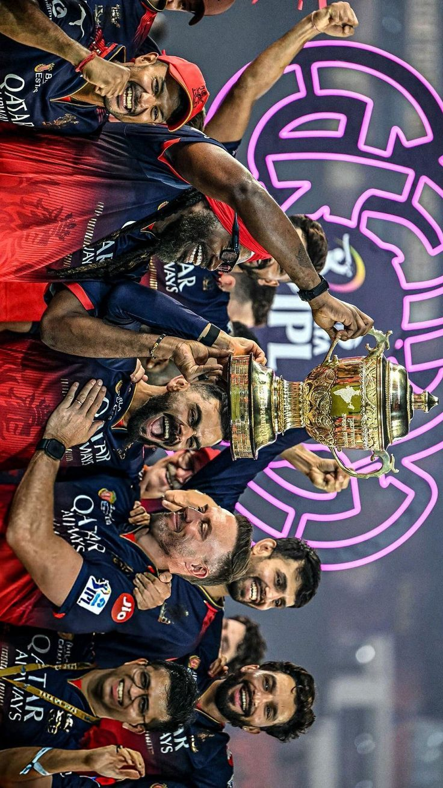
>Virat Kohli’s relationship with the Indian Premier League is unique, as he remains the only player to have played for a single franchise, Royal Challengers Bengaluru (RCB), since the league's inception in 2008. He holds nearly every major batting record in the tournament, including the highest individual run tally in a single season (973 runs in 2016) and the most career runs in IPL history. After years of near-misses, Kohli finally realized his dream of lifting the IPL trophy with RCB in 2025. Heading into the 2026 season, he continues to be the face of the franchise, currently on the verge of becoming the first player to cross the 9,000-run mark in the league. 🏅A Record-Breaking Legacy
t20 Career
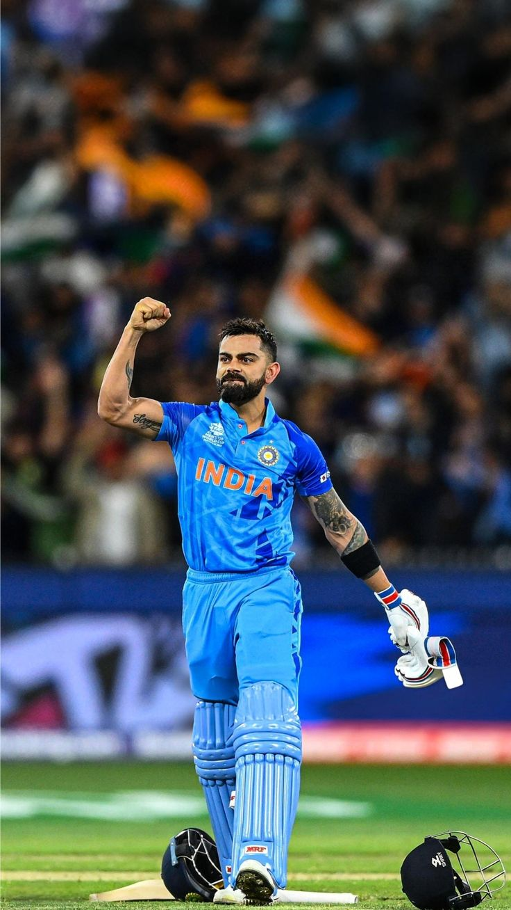
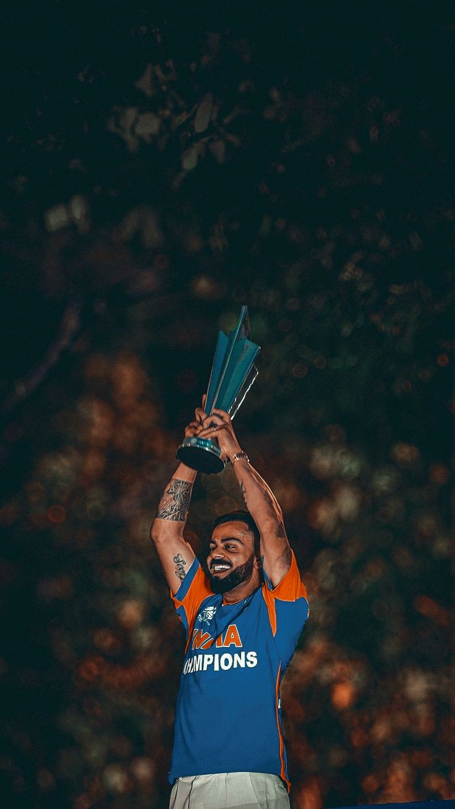
In the shortest format of the game, Virat Kohli established a legacy of being a clutch performer who thrived on the biggest stages. Throughout his 125-match T20I career, he scored 4,188 runs at a remarkable average of 48.7, finishing as one of the leading run-scorers in the history of the format. He was twice named the Player of the Tournament in the T20 World Cup (2014 and 2016) and holds the record for the most career runs in T20 World Cup history. Kohli’s T20I journey reached a fairytale conclusion in June 2024, when he played a match-winning knock of 76 in the World Cup final against South Africa to help India lift the trophy. Retiring on a high as a world champion, Kohli passed the torch to the next generation, leaving behind a record that includes 38 half-centuries and an unforgettable unbeaten 122 against Afghanistan.
Captaincy
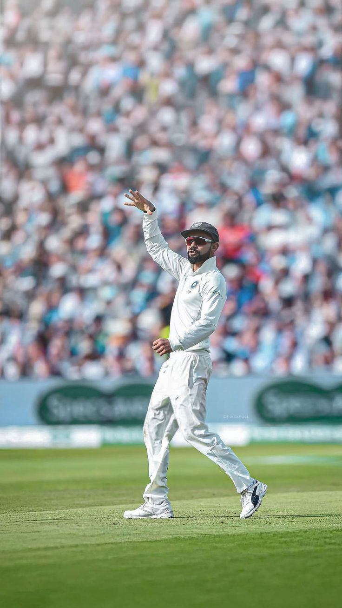
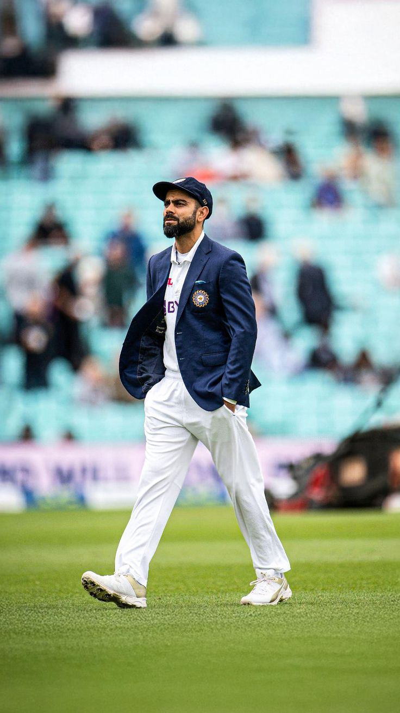
While his batting was elite, Virat Kohli’s captaincy is what fundamentally changed the DNA of Indian cricket. Taking over the reins unexpectedly in late 2014, he led India in 68 Tests and emerged as the country’s most successful Test captain with 40 victories. His leadership was defined by a fearless "win-at-all-costs" philosophy and an obsession with building a world-class pace attack. Under his command, India achieved the historic feat of winning their first-ever Test series in Australia (2018-19) and held the ICC World No. 1 ranking for five consecutive years (2016–2021). Kohli’s captaincy win percentage of 58.82% is the highest for any Indian captain who led in more than 10 matches, placing him among the greatest leaders in the history of the game alongside Steve Waugh and Ricky Ponting. He didn't just lead the team; he transformed India into a "menacing winning machine" that feared no opponent on any ground.